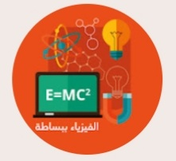
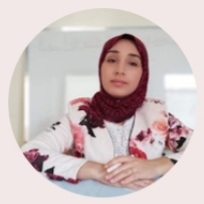
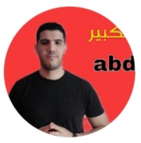
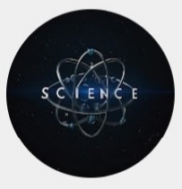
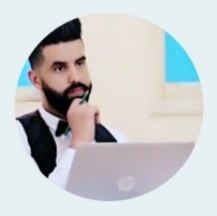
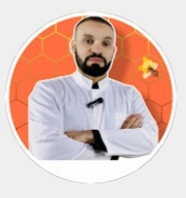
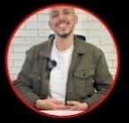
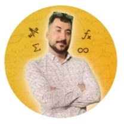
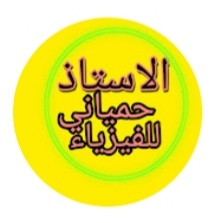
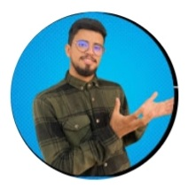

الفيزياء ببساطة
@الفيزياءببساطة-ظ7ك
367 ألف مشترك • 1.1 ألف من الفيديوهات

قناة كوثر التعليمية
@Educatrice_Kaoutar
833 ألف مشترك • 1.2 ألف من الفيديوهات

A7med - الفيزياء ببساطة
@-a7medtorkey463
6.57 ألف مشترك • 177 فيديو
bachir science
@profdibmohamedbachir
415 ألف مشترك • 48 فيديو

abdo_math
@abdo_math
93.4 ألف مشترك • 303 فيديوهات

آستاذ العلوم
@scienceprof-u6e
50 مشترك • 19 فيديو

Prof Mounir science
@profmounirscience115
11.8 ألف مشترك • 46 فيديو

الفيزياء مع الأستاذ عبد الله
@prof_Abdellah
113 ألف مشترك • 22 فيديو

prof Issam Eddine science الاستاذ عصام الدين علوم
@Prof.issam.sc09
27.2 ألف مشترك • 23 فيديو
الأستاذ شريفي عربية
@الاستاذشريفي
649 ألف مشترك • 209 فيديوهات
الأستاذ بوبكر مبروك اللغة العربية
@mabrouk_boubaker
1.8 مليون مشترك • 667 فيديو

العلم النافع ببساطة
@العلمالنافعببساطة
199 ألف مشترك • 713 فيديو

Ostadi Ma3i | أستاذي معي
@profelwardi1571
243 ألف مشترك • 296 فيديو

Prof issam math - أستاذ عصام رياضيات
@profissam
24.2 ألف مشترك • 104 فيديوهات

الاستاذ حمياني للفيزياء
@hamianiphysique
2.65 مليون مشترك • 861 فيديو

rabie's life
@rabieslife
55.6 ألف مشترك • 97 فيديو